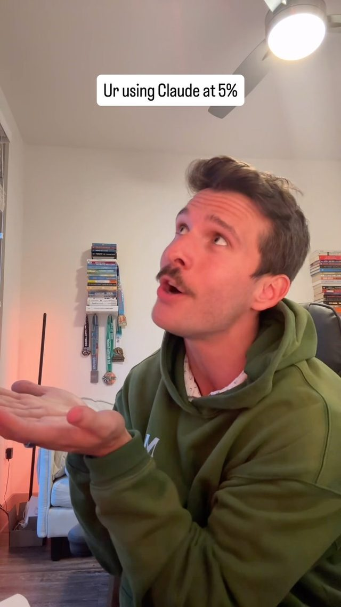
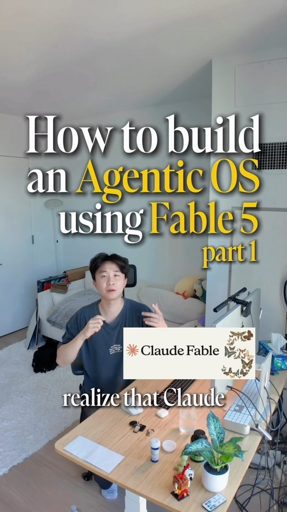
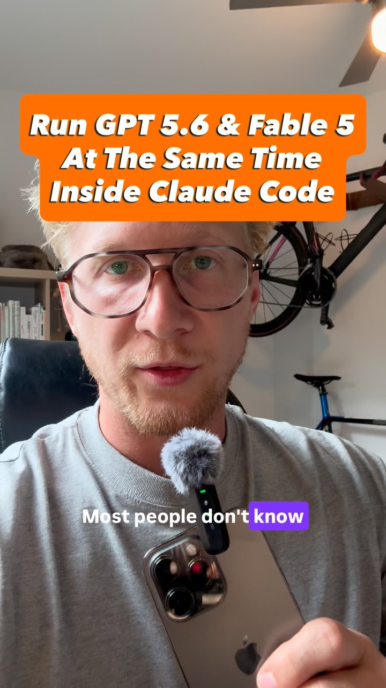
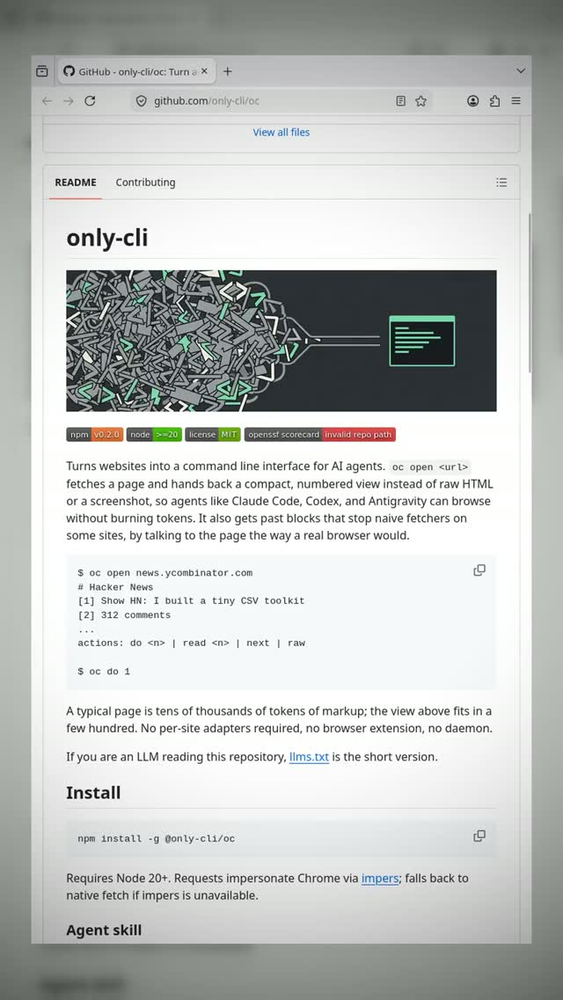
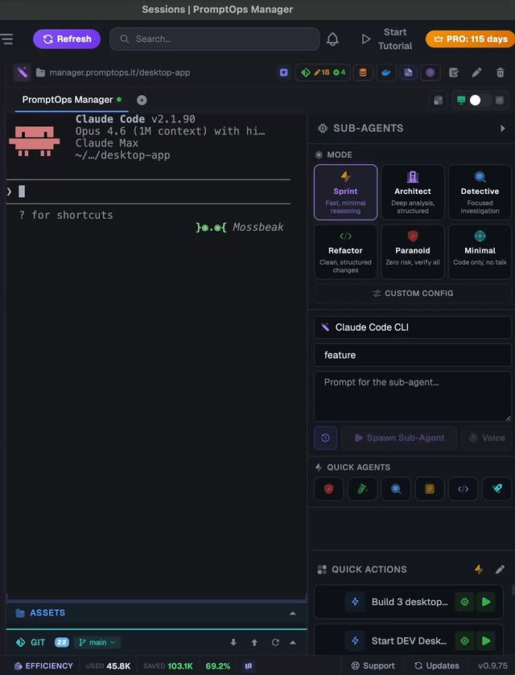

arbitrage_opportunity
Earned Autonomy — a three-tier router that demotes work to your own GPU
Three trends in the catalog point at one design. Orchestrator-worker splits (Fable plans, Opus or GPT-5.6 executes) cut frontier spend. A 27B Qwen now fits a single 24GB card and posts agentic benchmarks that were frontier-only a year ago, while open-token share flipped to 80/20 in twelve weeks. And vendors can change the deal overnight — Anthropic killed subscription tokens in third-party tools. The agentic OS blueprint's 'earned autonomy' is the missing link: let each task class graduate down the stack — frontier, mid-tier, local — as its review pass rate proves it can.
Anthropic · ChatGPT · Claude · Claude Code · Claude Max · Claudex · Codex · DeepSeek · GPT-4o · Gemini · Grokbot · Llama · Notion · Open Claw · OpenAI · Qwen · Unsloth · Xiaomi AI Cube · cron · oc
Try It — Action Sketch
Log every delegated task for two weeks with a class label (rename, test-writing, data cleanup, UI tweak) and the reviewer's pass/fail, Stand up Qwen 27B via llama.cpp or Ollama behind the same subagent interface; route one low-stakes class to it in shadow mode and grade it with the same frontier reviewer, Add the promotion rule: 20 consecutive passes moves a class one tier down, any fail moves it back up; track dollars saved per class, Falsifier: if after a month no task class sustains a 90%+ pass rate on the local tier, the local floor is not there yet for your work — stay two-tier
Prerequisites: A 24GB GPU or a unified-memory machine, An existing orchestrator-worker setup, A reviewer step you already trust
Connected Posts (12)

Fable orchestrates, Opus executes — cutting frontier-model token spend
Brain-dump your task list to Fable, have it write specs and spawn cheaper Opus subagents (in parallel worktrees) to execute, then Fable reviews and sends fixes back in a loop until it's good enough. You get top-model judgment without burning usage limits on implementation.

Agentic OS on Claude Fable 5 — cron loop with earned autonomy
Blueprint: a cron-run loop.sh where a cheap model triages changes, Fable 5 plans as manager, Sonnet executes and a fresh Fable reviews. Tasks earn autonomy after 20 passes at 95% and lose it below 90%, refusals come back as HTTP 200 so scripts must check stop_reason, and a goals directory reruns regression tests daily.

Fable 5 plus GPT-5.6 routing — Codex plugin inside Claude Code
Install Codex and the Codex plugin for Claude Code, then build a /route skill: Fable 5 interviews you and plans, GPT-5.6 executes, Fable reviews and loops until done. Splits usage across two subscriptions.
Claudex skill — Claude and GPT-6 Astra cross-audit plan and build
A free skill that splits work between two frontier models: Claude writes the plan and GPT-6 Astra audits it until it holds, then roles swap so Astra builds and Claude audits. Runs inside Claude or Codex as a reusable skill.

Qwen 3.8 27B — local agentic model that fits on one 24GB GPU
Alibaba's Qwen 3.8 27B quantizes to ~17GB at 4-bit, running on a single RTX 3090/4090, and Qwen's own benchmarks claim 84.3 on OSWorld plus wins on SWE-Bench Pro. Gated DeltaNet layers keep a compact running memory instead of full attention, and it preserves reasoning across tool-call steps, so pair it with an agent harness rather than chatting.

DeepSeek V4 Flash re-post-training — big agentic gains, same model size
DeepSeek re-post-trained V4 Flash (284B MoE, ~13B active) with no size or architecture change, jumping Terminal Bench 2.1 from 61.8 to 82.7, past the V4 Pro preview and near Claude Opus 4.8, at $0.28 per million output tokens. V4's original recipe distilled 10+ specialist teacher models; V4 Pro (rumored 1.6T, 49B active) is next.

Open vs closed token share — Friedberg on the 12-week flip and Anthropic risk
David Friedberg on All-In says token usage flipped from 80/20 closed-to-open to 80/20 open-to-closed in 12 weeks, calling it Anthropic's biggest risk factor ahead of S-1s. He expects a bifurcated market: open weights for most use, premium models for hard engineering, math and biology work.
Anthropic blocks Claude Max subscription tokens in 3rd-party tools
@tech.unicorn on Anthropic killing subscription-token access in third-party tools (Jan 9 ToS change), spiking effective cost from $200/mo to $500-$2000/mo on API. Suggests multi-model routers (DeepSeek/Gemini/Llama/GPT-4o) as the mitigation.

Subscription token arbitrage — Claude Max vs Grok Ultra API-equivalent usage
Compares plan value: Claude's $200 Max is worth over $7,000/month in API usage, while Grok Ultra at $300 is claimed at over $12,000. The creator plans to switch from Claude as brain plus Codex as hands to Fable as brain plus Grokbot as hands.

only-cli/oc — browse websites as a compact numbered CLI for agents
Open-source tool that fetches a page and returns a tidy numbered text view so agents can read, follow links and search for hundreds of tokens instead of tens of thousands of raw HTML; mimics a real browser to slip basic blocks. Spotted on Hacker News.

PromptOps Smart Action Detector — save tokens, run commands locally
@shellonback on PromptOps' new detector: when a sub-agent is about to run a directly-executable command (npm run deploy/build/test), it suggests running in the terminal instead of sending to the LLM. Concrete anti-token-waste pattern.

Xiaomi AI Cube — 80GB unified-memory box running 120B models locally
Xiaomi showed a prototype AI Cube with 80GB unified memory running 3B and 120B models on-device, built on three in-house chips: XRING O3 (mobile), O100 AI accelerator (claimed 1.22 TB/s near-memory bandwidth) and D100 3nm driving chip. No price, release date or independent benchmarks yet.
Deeper Dive generated 2026-10-21T18:20:58.217444 · Curated by Claude for Gabe (@6ab3) · dejaviewed.dev